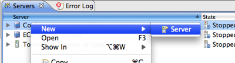
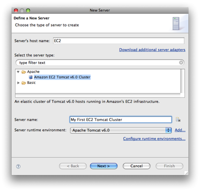
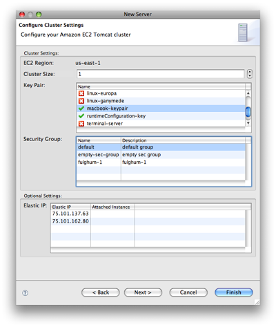

Before you can deploy a Java web application to a cluster of Tomcat servers running in EC2, you'll need to create your cluster. You can do this in a few different places in the Eclipse Web Tools Platform (WTP), but the easiest is to open the WTP Servers view and right-click to bring up the context menu. From there you should see a menu item to create a new server.

On the first page of the WTP new server wizard, you'll want to select the Amazon Tomcat v6.0 Cluster in EC2 server type. You'll probably also want to specify the host name as EC2 and give your cluster a meaningful name to keep things organized.

After you select the Amazon Tomcat v6.0 Cluster in EC2 server type you should see a number of EC2 specific options on the second page of the new server wizard. This page allows you to configure how your cluster will run in EC2. You can select how many hosts you want your application to run on. If you select more than one host, the AWS Toolkit for Eclipse will also create a load balancing proxy to sit in front of all of your Tomcat servers and help distribute load. If you haven't created any key pairs or security groups, you can do so directly from this page by right-clicking on each table to bring up the context menu. You can also optionally create a new Elastic IP or select an existing Elastic IP to attach to the endpoint of your cluster.

The next page of the WTP new server wizard allows you to select which projects in your workspace you want to include in this new cluster. Select any projects you want to include and finish the wizard.
Now you should see your new EC2 Tomcat cluster in the WTP servers view, ready to be started, and then run your application.